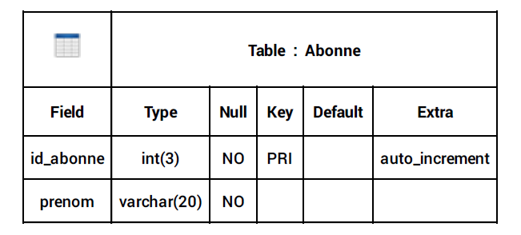

1 - Les requêtes de bases
- Créer une BDD :
CREATE DATABASE IF NOT EXISTS nomBdd - Supprimer une BDD :
DROP DATABASE IF EXISTS nomBdd - Observer la description d'une table :
DESC nomBdd - Voir les BDD dans le serveur :
SHOW DATABASES
2 - Tables et colonnes
- Créer une BDD 'entreprise' :
CREATE DATABASE IF NOT EXISTS entreprise - Créer une table dans la BDD entreprise :
CREATE TABLE IF NOT EXISTS employes( id_employes INT(11) NOT NULL PRIMARY KEY AUTO_INCREMENT, prenom VARCHAR(20) NULL, nom VARCHAR(20) NULL, sexe ENUM ('f', 'm') NOT NULL, service VARCHAR(30) NULL, date_embauche DATE NULL, salaire FLOAT NULL ) - insérer des données dans une table:
INSERT INTO employes(id_employe, prenom, nom, sexe, service, date_embauche, salaire) VALUES (381, 'Imane', 'NAJJAHI', 'f', 'comptabilité', '2023-06-18', 3000), (400, 'Spartak', 'SMBATYAN', 'm', 'informatique', '2000-05-11', 6000), (450, 'Semir', 'SARAHJLIC', 'm', 'juridique', '2002-06-30', 4000), (510, 'Kaïss', 'BADI', 'm', 'contrôle', '2005-03-21', 2500), (550, 'Adama', 'CISSOKO', 'm', 'juridique', '1998-02-20', 4000), (570, 'Fabien', 'POTTIER', 'm', 'juridique', '1850-04-04', 20000), (700, 'Gary', 'MONTEIRO', 'm', 'informatique', '2022-05-28', 3300), (710, 'Axel', 'GRANSART', 'm', 'comptabilité', '2023-03-04', 5000), (810, 'Cleid', 'MANIGAT', 'm', 'contrôle', '2021-06-01', 2100), (910, 'Leïla', 'EMBARK', 'f', 'secretariat', '2023-06-16', 2000), (911, 'Maureene', 'MAROLANY', 'f', 'secretariat', '2022-10-17', 2000), (920, 'Océane', 'FOMEKOUONG', 'f', 'direction', '2023-06-16', 2000) - Syntaxe alternative : ne permet pas d'insérer plusieurs séries de valeurs en une seule requête,
contrairement à la syntaxe de base (au dessus)
INSERT INTO employes SET id_employe = 900, prenom = 'Sahar',nom = 'FERCHICHI', sexe = 'f', service ='direction', date_embauche = '2000-06-06', salaire = 7000
3 - select et distinct
- Pour voir tout le contenue d'une table :
SELECT * FROM employes(* = tout = all) - Sélectionner les valeurs de deux champs d'une table :
SELECT colonne1, colonne2 FROM nomTable
-> SELECT prenom, nom FROM employes - Afficher les données sans doublons :
SELECT DISTINCT colonne FROM nomTable
-> SELECT DISTINCT service FROM employes - Effacer un enregistrement:
DELETE FROM nomTable WHERE colonne =''
-> DELETE FROM employes WHERE nom = 'Salimata'
les requêtes ne sont pas sensible a la casse mais une convention indique qu'il faut mettre les mots-clefs des requêtes en majuscules. C'est plus facile ainsi de s'y retrouver
4 - Les oppérateur de comparaison
| Opérateur | Symbole |
|---|---|
| = | Est égal à |
| > | Strictement supérieur à |
| < | Strictement inférieur à |
| >= | Suppérieur ou égal à |
| <= | Inférieur ou égal à |
| < > ou != | est différent de |
5 - Crées un ALIAS avec AS
Nous créons un ALIAS pour renomer temporairement une colonne ou une table dans une requête. Cette astuce est particulièrement utile pour faciliter la lecture des rêquetes
- SELECT colonne1, colonne2, colonne3 AS colonne FROM nomTable
-
SELECT nom, prenom AS firstName FROM employes -
SELECT nom, prenom, salaire*12 AS salaireAnnuel FROM employes
6 - les conditions et les condititons multiples
Le mot-clef WHERE (à condition que)
- Nous cherchons avec une condition une partie des données:
SELECT colonne, colonne FROM table WHERE colonne = 'donnée' - Ici, nous cherchons à afficher les personnes dont le sexe est masculin:
SELECT nom, prenom, sexe FROM employes WHERE sexe = 'm' - Trouver la personne qui gagne 7000
SELECT nom, prenom, salaire FROM employes WHERE salaire = 7000
Le mot-clef WHEREavec différents champs, différentes valeurs et AND
- Nous cherchons l'employé qui gagne 5000 euros et dont le service est comptabilité
SELECT nom, prenom, salaire FROM employes WHERE salaire = 5000 and service = comptabilité
Le mot-clef WHEREavec différents champs, différentes valeurs et OR
- Nous cherchons l'employé qui gagne un salaire qui est égale à 5000 euros ou moins de 2000 euros
SELECT nom, prenom, salaire FROM employes WHERE salaire = 5000 OR salaire <= 2000
Le mot-clef WHEREet l'ordre de priorité sur les conditions AND et OR
- Nous cherchons à afficher les employés qui travaillent dans le service direction et qui gagnent 4000 euros ou
7000 euros
SELECT * FROM `employes` WHERE salaire = 7000 OR salaire = 4000 AND service = 'direction' -
Lorsq'il y a AND et OR au sein de la même requète, le système lit la condition de la requète de la droite vers la gauche. Ainsi, il verra d'abord
salaire = 4000 OR salaire = 7000puis le service demander - Pour garantire l'ordre naturel de lecture (de la gauche vers la droite), nous utiliserons des paranthèses
-
SELECT * FROM `employes` WHERE (salaire = 7000 OR salaire = 4000) AND service = 'direction'
Le mot-clef WHEREavec BETWEEN(entre)
- Nous cherchons avec une condition une partie des données
SELECT * FROM nomTable WHERE colonne BETWEEN donnée AND donnée - Nous cherchons à trouver le nombre de personnes embauchées entre 2021 et 2023
-
SELECT * FROM employes WHERE 'date_embauche' BETWEEN '2021-01-01' AND '2023-31-12'
Le mot-clef WHEREavec LIKE
- Nous cherchons avec une condition une partie des données
SELECT * FROM nomTable WHERE colonne BETWEEN donnée AND donnée -
Afficher les employés dont le prénom commence par la lettre "s":
SELECT * FROM employes WHERE prenom LIKE 's%' - Cette méthode sera tres utile dans un moteur de recherche.
- Dans cette ligne de code le pourcentage signifie que l'on recherche le "s" en début du mot, ainsi, la suite de caractères vient après le "s"
-
Afficher les employés dont le prénom qui contient la lettre "s"
SELECT * FROM employes WHERE prenom LIKE '%s%' - Avec la présence du pourcentage avant et après le caractère recherché, nous demandonsau système de trouver des enregistrements contenants l'expression recherchées
Le mot-clef WHEREavec CURDATE()(date courante)
- C'est une fonction prédéfinie avec ses paranthèses
-
Une requète qui donne ma date du serveur, la date du jour:
SELECT CURDATE() - Dans une BDD, les dates sont toujours au format états-unis en YYYY-MM-DD
-
Afficher les employés embauchées entres 2022 et aujourd'hui:
SELECT * FROM employes WHERE 'date_embauche' BETWEEN '2022-01-01' AND CURDATE()
Le mot-clef WHEREavec IN
- Egal (=) permet d'annoncer une seule valeur tandis que IN permet d'annoncer plusieurs valeurs
-
Trouver les employés de la comptabilité et du service informatique:
SELECT * FROM `employes` WHERE service IN (informatique,comptabilité)
Le mot-clef WHEREavec NOT IN
- Différent (!=) permet d'exclure une seule valeur NOT IN permet d'annoncer plusieurs valeurs
-
Trouver les employés qui ne sont pas au service comptabilité et informatique:
SELECT * FROM `employes` WHERE service NOT IN (informatique,comptabilité)
7 - Classement avec ORDER BY
- Grâce à ORDER BY on va classer les données par ordre alphabétique
-
On range les nom par ordre alphabétique
SELECT prenom, nom FROM employes ORDER BY nom DESC -
fonctionne pour les string comme pour les nombres:
SELECT prenom, nom, salaire FROM employes ORDER BY salaire DESC -
ORDER BY permet de trier sur plusieurs colonne les string comme pour les nombres:
SELECT prenom, nom, salaire FROM employes ORDER BY salaire DESC
8 - Limiter les résultats avec les mots clé LIMIT
-
Afficher les employés en les classant par salaire (du + grand au + petit) et en limitant le résultat à 3 :
SELECT * FROM employes ORDER BY salaire DESC LIMIT 0,3; - Le premier chiffre précise l'enregistrement de depart : 0 qui définit le premier enregistrement informatique. le second chiffre indique combien de résultat nous attendons
9 - Réaliser des calculs dans nos requètes
Calculer une sommes avec SUM() et une moyenne avec AVG()
-
Calculer la sommes totale des salaire à l'année des employés
SELECT SUM(salaire*12) AS sommeSalaire FROM employes -
Calculer le salaire mensuel moyenne de tout les employes
SELECT AVG(salaire) FROM employes
arrondir avec ROUND()
-
Graace à Round()on peut arrrondir le résultat d'un calcul:
SELECT ROUND(AVG(salaire)) FROM employes - On peut cumuler deux notions comme dans l'exemple précédent avec ROuND()et AVG().attention a la syntaxe et aux parentèses
Compter avec COUNT()
-
Graace à COUNT()on peut compter les ligne de notre table:
SELECT COUNT(*)AS nbr_ligne FROM employes -
Compter et afficher le nombre d'employée de sexe féminin dans la table
SELECT COUNT(*) AS nombre_femmes FROM employes WHERE sexe = 'F';
Isoler une valeur maximum et minimum MIN() / MAX()
-
Grace à MIN()on peut trouver le salaire minimum:
SELECT MIN(salaire) FROM employes -
Grace à MAX()on peut trouver le salaire maximum:
SELECT MAX(salaire) FROM employes
10 - Les regroupement avec GROUP BY
- Ici on veut connaître le nombre d'employés par service
SELECT service, COUNT(*) AS nbr_employe FROM employes GROUP BY service - Ici on veut connaître le nombre d'employés homme et d'employés femme par service
SELECT sexe, COUNT(*) AS nbr_employe FROM employes GROUP BY sexe;
11 - Le mot clé HAVING
- Sélectionner et afficher seulement les services qui ont plus de deux employés
SELECT service, COUNT(*) AS nombre_employes FROM employes GROUP BY service HAVING COUNT(*) > 2; - Ici on veut connaître le nombre d'employés homme et d'employés femme par service
SELECT sexe, COUNT(*) AS nbr_employe FROM employes GROUP BY sexe;
12 - requête de modification
Mise à jour avec Update
- Augmente le salaire d'un employes
UPDATE employes SET salaire = 2700 WHERE id_employe = 380 - On utilise toujours des id pour mettre à jour les informations de la base de donnée car c'est le seul élément unique
- Pour faire plusieurs mises à jour en même temps il faudra séparer les données par une virgules :
UPDATE employes SET service = 'direction', salaire = 4000 WHERE id_employe = 380
Supprimer avec UPDATE
-
Supprimer l'enregistrements d'un employé avec DELETE
DELETE FROM employes WHERE id_employe = 910 -
Supprimer plusieurs enregistrement avec le code suivant (on supprime toutes les personne du service contrôle)
DELETE FROM employes WHERE service = 'contrôle'
13 - Requête imbriquée
- Consiste à éxécuter une requête à l'intérieur d'une autre requête, encapsulée dans une autre requête, il n'y a pas de limite dans le nombre de niveaux d'imbrication
- Le résultat de chaque requête imbriquée sert de valeur de référence dans la condititon de sélection de la requête de niveau supérieur, appelée requête principale
- Afin d'avoir un cas concret et un contexte favorable à ce type de requête, nous allons modéliser la base de données d'une bibliothéque
1 - Une BDD bibliothéque
Les sujets d'une BDD bibliothéque
- Une table des livres
- Une table des abonnés
- Une table empruntqui permet de savoir quel livre a été emprunté par quel abonnées et à quel date
Ici, on commence à modéliser notre base de données en réfléchissant à ce qui va aller dedans
